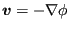
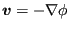
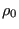
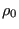

Next: Electrostatics Up: Types of analysis Previous: Hydrodynamic lubrication Contents
If incompressible flow is irrotational a potential  exists for the
velocity field such that
. Furthermore, if the
flow is inviscid one can prove that if a flow is irrotational at any instant
in time, it remains irrotational for all subsequent time instants [91]. The
continuity equation now reads
exists for the
velocity field such that
. Furthermore, if the
flow is inviscid one can prove that if a flow is irrotational at any instant
in time, it remains irrotational for all subsequent time instants [91]. The
continuity equation now reads
and the balance of momentum for gravitational flow yields
where  is the earth acceleration,
is the earth acceleration,  is the pressure,  is the
density and z is the coordinate in earth direction.
By comparison with the heat equation, the correspondence in Table
(12) arises.
is the pressure,  is the
density and z is the coordinate in earth direction.
By comparison with the heat equation, the correspondence in Table
(12) arises.
Once  is determined, the velocity
is determined, the velocity
 is obtained by
differentiation and the pressure
is obtained by
differentiation and the pressure  can be calculated through the balance of
momentum. Although irrotational incompressible inviscid flow sounds very
special, the application field is rather large. Flow starting from rest is
irrotational since the initial field is irrotational. Flow at speeds below 0.3
times the speed of sound can be considered to be incompressible. Finally, the
flow outside the tiny boundary layer around an object is inviscid. A favorite
examples is the flow around a wing profile. However, if the boundary
layer separates and vortices arise the above theory cannot be used any
more. For further applications see [40].
can be calculated through the balance of
momentum. Although irrotational incompressible inviscid flow sounds very
special, the application field is rather large. Flow starting from rest is
irrotational since the initial field is irrotational. Flow at speeds below 0.3
times the speed of sound can be considered to be incompressible. Finally, the
flow outside the tiny boundary layer around an object is inviscid. A favorite
examples is the flow around a wing profile. However, if the boundary
layer separates and vortices arise the above theory cannot be used any
more. For further applications see [40].